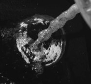
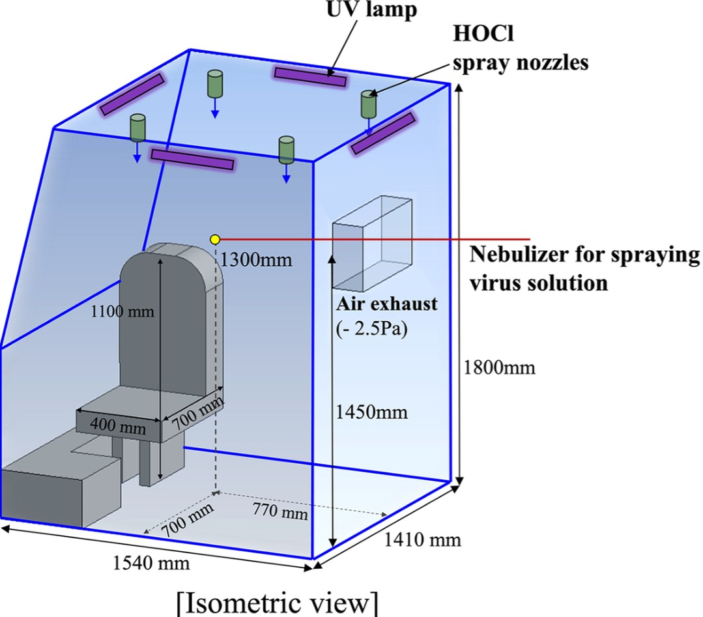
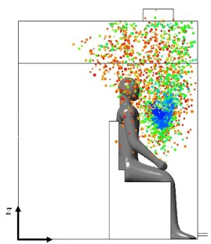
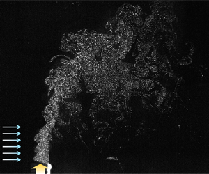
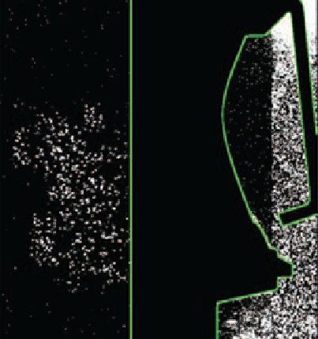
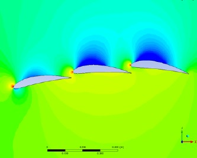

Axial forces in capillary liquid bridges of polymer solutions
Submitted.
No matching publications found.
Submitted.
In preparation.
In preparation.
In preparation.
Scientific Reports 14, 8189 (2024)
Y. Kang and J. Park contributed equally to this work.

PLOS ONE 19(10), e0311274 (2024)

Journal of Hazardous Materials 435, 128978 (2022)

Journal of Fluid Mechanics 915, A5 (2021)

Physics of Fluids 33(10) (2021)

Journal of the Korean Society of Visualization 17(2), 25–31 (2019)
In Korean.

Oral, 15th International Symposium on Particle Image Velocimetry (ISPIV), San Diego, California, USA.
Oral, 11th International Conference on Multiphase Flow, Kobe, Japan.
Oral, 75th Annual Meeting of the APS Division of Fluid Dynamics, Online.
Oral, 75th Annual Meeting of the APS Division of Fluid Dynamics, Online.
Oral, The 12th National Congress on Fluids Engineering, Changwon, South Korea.
Oral, The 2021 Fall Conference of the Korean Society of Visualization, Busan, South Korea.
Oral, The 16th Conference of the International Society of Indoor Air Quality & Climate, Online.
Oral, The 16th Conference of the International Society of Indoor Air Quality & Climate, Online.
Oral, The 11th National Congress on Fluids Engineering, Jeju, South Korea.
Oral, The 11th National Congress on Fluids Engineering, Jeju, South Korea.
Oral, 72nd Annual Meeting of the APS Division of Fluid Dynamics, Seattle, WA, USA.
Oral, The 2018 Fall Annual Meeting of the Korean Society of Mechanical Engineers, Kangwon, South Korea.
Oral, 71st Annual Meeting of the APS Division of Fluid Dynamics, Atlanta, GA, USA.
Oral, The 2018 Spring Annual Meeting of the Korean Society of Mechanical Engineers, Ulsan, South Korea.
Poster, The 2017 Fall Annual Meeting of the Korean Society of Mechanical Engineers, Jeju, South Korea.